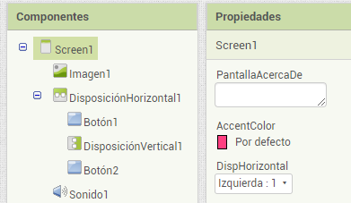
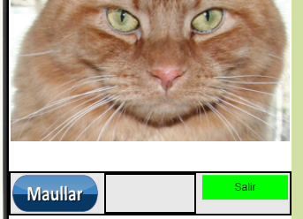
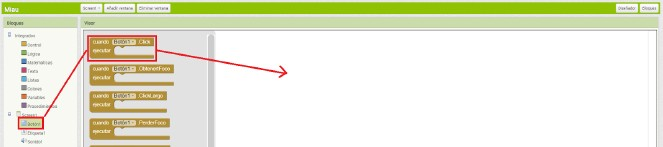
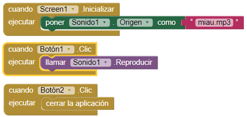
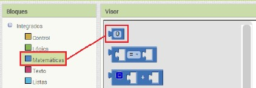
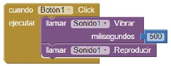
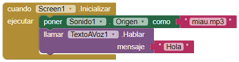
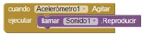
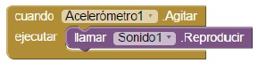

3.1. Reproducir sonido
Antes de nada, para este ejercicio necesitamos dos recursos que tenemos que descargar en nuestro ordenador:
Diseño
Para realizar el diseño tendremos que arrastrar desde la parte izquierda de la vista de diseño(Paleta) a la parte central de la pantalla los siguientes componentes:
• Imagen (interfaz de usuario)
• Disposición horizontal(disposición)
• Dos componentes tipo botón(interfaz de usuario)
• Disposición vertical(disposición)
• Sonido(medios)
Observa como el componente sonido aparece como no visible ya que realmente no afecta a la apariencia de la aplicación sino que permitirá reproducir sonidos. En este componente tendremos que "cargar" el fichero de audio a reproducir mediante la ventana de medios o directamente subiéndolo en su propiedad Origen.
Disposiciones
Por defecto, MIT App Inventor apila en la vista de diseño los componentes visuales que agregamos. En general, podemos afirmar que las disposiciones son elementos contenedores que permiten alinear otros componentes en pantalla; ya sea una disposición horizontal que los alinea teniendo como referencia el eje del mismo nombre o vertical, que los permitiría alinear conforme a la vertical de la pantalla del dispositivo.
Puede ocurrir también que entre dos componentes, como es el caso de nuestra aplicación de ejemplo con los botones, queramos introducir un determinado espaciado a modo de separación. Para este último caso, el uso de una disposición vertical u horizontal "separadora"(realmente no contiene otros componentes) también puede resultar de utilidad.
 
Observa cómo podemos establecer el tamaño de las disposiciones haciéndolas partícipes del tamaño original de los elementos que contienen(automático), configurando un ancho o alto fijo en píxeles o en porcentajes u ocupando todo el área que nos permita el contenedor que la tenga.
Componente imagen
El componente imagen necesita que "subamos" el fichero a mostrar, en este caso, la imagen Kitty.png. Parra ello seleccionamos el componente Image1, en Propiedades, y bajo la propiedad Foto, hacemos clic en Ninguno … Elegimos la opción Subir archivo… , y después Seleccionar archivo.
El aspecto visual lo definiremos en la vista de diseño a través de sus propiedades. Ajustamos el alto y el ancho al contenedor.
Componente botón
Uno de los componentes más utilizados en las aplicaciones móviles son los botones. Podremos gestionar lo que ocurre cuando hagamos clic sobre él y otros cuantos eventos interesantes en la vista de bloques. El aspecto visual lo definiremos en la vista de diseño a través de sus propiedades.
• ColorDeFondo: Color sólido del botón.
• Habilitado: Por defecto el usuario puede usarlo si está marcado.
• Negrita: El texto del botón aparecerá resaltado.
• Cursiva: El texto del botón se mostrará en cursiva.
• Tamaño de la letra: Número que especifica el tamaño en puntos de la fuente usada por el botón.
• TipoDeLetra: Fuente utilizada por el texto.
• Alto, Ancho: Dimensiones del botón especificadas mediante puntos fijos(píxeles) o porcentajes.
• Imagen: Nos permite personalizar un botón con un icono o imagen.
• Forma: Define el estilo del botón.
• MostrarPulsación: Marcado distinguirá entre pulsado y sin pulsar.
• Texto: Mensaje que aparecerá escrito sobre el botón.
• PosiciónDelTexto: Alineación respecto al eje horizontal.
• ColorDelTexto: Color sólido de la fuente.
• Visible: Marcado indica que se mostrará en pantalla.
Para quitar el texto “Texto para el Botón1” que aparece en el botón hay que borrar el valor de la propiedad Texto del botón, en la parte derecha de la ventana. Ponemos como valor Maullar. Repetimos la operación con Boton2, poniendo como valor de texto Salir.
Modificar las propiedades para personalizar los botones (color de fondo, tipo de letra, etc.).
Componente sonido
Este componente multimedia nos permitirá reproducir ficheros de audio de corta duración e incluso hacer que el dispositivo móvil vibre. Si el audio resulta ser una melodía o canción tendremos que utilizar el componente Reproductor.
Los formatos de sonido soportados son los estándares que reproduzca el dispositivo Android siendo WAV o MP3 los más utilizados. Para reproducirlos previamente tendremos que cargar los ficheros a nuestra aplicación e indicarlo en su propiedad Origen.
Ahora añadiremos un sonido a nuestra aplicación, seleccionamos el componente Sonido. Hacemos clic sobre el valor de la propiedad Origen y subiremos el archivo descargado “Miau.pm3”
Programación en MIT App Inventor
Una vez realizado el diseño de nuestra aplicación tendremos que gestionar lo que ocurre con la misma. Para ello cambiaremos la interfaz de la plataforma a la pantalla de bloques.
MIT App Inventor, como otros lenguajes de programación visuales, utiliza un sistema de bloques o "fichas de puzle" que nos permiten programar lo que ocurre cuando interactuamos con la aplicación.
Existen una serie de bloques clasificados por colores denominados integrados que podremos utilizar en cualquier momento y un conjunto de bloques que dependerán de los componentes que hayamos incluido en nuestra aplicación.
Controlar lo que ocurre en nuestra aplicación es una tarea bastante sencilla. Cada componente introducido tiene una serie de eventos asociados que arrastrándolos al área de principal de la pantalla nos permitirán conectar con otros bloques que definirán el comportamiento de la app.
Hacemos clic en el botón Bloques situado en la esquina superior derecha. Para nuestra primera aplicación de ejemplo los bloques necesarios son los siguientes:


La interpretación que podemos hacer de los mismos es la siguiente:
<< Cuando la pantalla principal se inicie estableceremos como origen el fichero de audio miau.mp3 en el componente Sonido1. En cualquier momento de la ejecución de nuestra app si el usuario hace clic sobre el Botón1 se reproducirá el audio cargado en el componte Sonido1 y si hace clic sobre el Botón2 se cerrará la aplicación. >>
Observa que:
• Inicializar es un evento de Screen1 y en general de cualquier "pantalla".
• Los eventos Clic son propios de los componentes tipo botón.
• Desde la vista de bloques podemos también establecer propiedades en tiempo
de ejecución que se podrían configurar en la vista diseño.
• Podemos hacer uso de los bloques integrados para tareas de control como cerrar
la aplicación o poner un campo de texto.
Ahora a vibrar
Podemos mejorar la aplicación, haciendo que el teléfono vibre a la vez que el gato maúlla. Una pista: hay que buscar dentro del cajón de bloques del objeto Sonido1 .
El bloque que hace que el móvil vibre es Llamar.Sonido1.Vibrar. Este bloque, a diferencia del anterior, tiene un “encajador” por el lado derecho. Sirve para indicar cuánto tiempo tiene que vibrar el dispositivo, en milisegundos.Para poner aquí un valor de tiempo hay que abrir el cajón Matemáticas y arrastrar el bloque de arriba hasta el encajador libre a la derecha del bloque
Llamar.Sonido1.Vibrar, donde indica milisegundos .

Ahora cambiamos el valor 0 por el valor 500, para que vibre durante medio segundo. Los bloques quedarán así:

MIT AI2 Companion
Suponiendo que estamos desarrollando en la misma red en la cual está el dispositivo móvil conectado mediante WIFI, podemos enlazar ambos utilizando MIT AI2 Companion. Para ello desde el menú de App Inventor generaremos un código QR que podremos teclear o escanear. Este código será de un sólo uso y habilitará el "desarrollo en vivo", esto es, que mientras estamos viendo la aplicación en el dispositivo real cualquier cambio en MIT App Inventor se verá reflejado en el terminal.
Guardar el proyecto
MIT App Inventor almacenará nuestro proyecto de manera automática en la nube sin que tengamos que preocuparnos de nada; sin embargo, puede ser conveniente por diversos motivos disponer de una copia del mismo. Para conseguir esto, la plataforma nos permite generar un fichero en formato AIA que más tarde podríamos volver a cargar en la plataforma bien en nuestro perfil de usuario o en otro. Este fichero, que no es más que un archivo ZIP con la extensión cambiada, contiene toda la estructura de nuestro proyecto incluyendo los distintos ficheros que hayamos incorporado.
Instalar la aplicación
Una vez concluido el proceso de creación de la app si deseamos instalarla de manera permanente en un dispositivo tendremos que generar y descargarnos un fichero en formato APK. Dicho formato es el estándar utilizado por cualquier aplicación Android solo que en lugar de descargarlo del mercado oficial lo haremos desde los servidores del MIT. Previo a este paso deberemos permitir a nuestro dispositivo la instalación de aplicaciones desde orígenes desconocidos (no oficiales). Esta opción se encuentra en Ajustes / Seguridad.
Actividad
Utilizando la opción de Guardar como... crea una nueva app a partir del proyecto actual con una imagen diferente, botones con fondos personalizados y otro fichero de sonido.
Vamos a incluir dos componentes nuevo, el Acelerómetro, que se encuentra en la Paleta Sensores y TextoAvoz de Medios . Ambos se quedarán bajo la ventana del visor, porque no se refieren a objetos visibles en nuestra interfaz de usuario.
Con TextoAVoz vamos a hacer que al iniciar la aplicación el personaje o animal de nuestra aplicación se presente.

El acelerómetro es el sistema que detecta que el móvil se mueve, o cambia de orientación vertical a horizontal. Es muy útil para muchas aplicaciones.
En el editor de bloques, elegiremos en la ventana de bloques el objeto Acelerómetro1 que hemos creado. De su cajón elegiremos el bloque mostaza cuando.Acelerómetro1.Agitar
Ahora copiamos el bloque Llamar.Sonido1.Reproducir de arriba, haciendo clic con el botón derecho sobre él y seleccionando Duplicar . Una vez duplicado lo encajaremos con el bloque mostaza que hemos creado. El editor de código aparecerá como en la siguiente figura.
 

¿Qué va a ocurrir? El sonido se reproducirá cada vez que agitemos el móvil.
Obra publicada con Licencia Creative Commons Reconocimiento Compartir igual 4.0